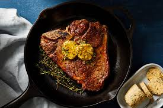

Steak Dinner

Cowboy Butter steak
This cowboy butter steak consists of a juicy ribeye seared to perfection in a cast iron skillet
topped with a homemade cowboy butter to die for.This juicy combination will knock your socks off!!
Ingredients
- 1 pound ribeye
- 1 3/4 tsp kosher salt
- 2 sticks unsalted butter, softened
- 2 garlic cloves, minced
- zest 1 lemon
- 2 tbsp thinly sliced chives
- 1 tbps dijon mustard
- 2 tbsp hot sauce
- 2 tbsp prepared horseradish
- 1/2 tsp freshly ground black pepper
- 1/2 tsp smoked paprika
- 1/4 tbsp neutral oil
- Flaky salt
Steps
- Heat a medium stainless steel or cast iron pan over medium high heat, pat steak dry, season with kosher salt
- In a small bowl mix butter,garlic,lemon zest,chives,mustard,hot sauce,
horseradish,pepper,paprika,chili powder,and remaining 3/4 tsp kosher salt till smooth
- Pour oil into skillet and swirl to coat. Place steak in pan and cook, undisturbed, until a golden brown crust forms and steak easily lifts from pan, 3 to 4 minutes. Turn steak and reduce heat to medium. Add 2 Tbsp. cowboy butter to pan and let melt. Using a large spoon and tipping skillet if needed, scoop up some melted butter and spoon it over steak. Cook until instant-read thermometer inserted into the center registers 125°, 3 to 4 minutes more.
- Transfer steak to a cutting board and let rest 5 minutes. Cut away from bone and slice across the grain. Top with sea salt, a dollop of cowboy butter, and a sprinkle of chives.
Home